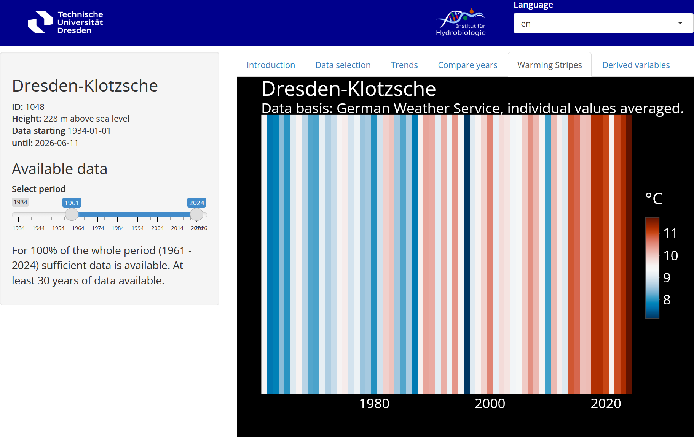
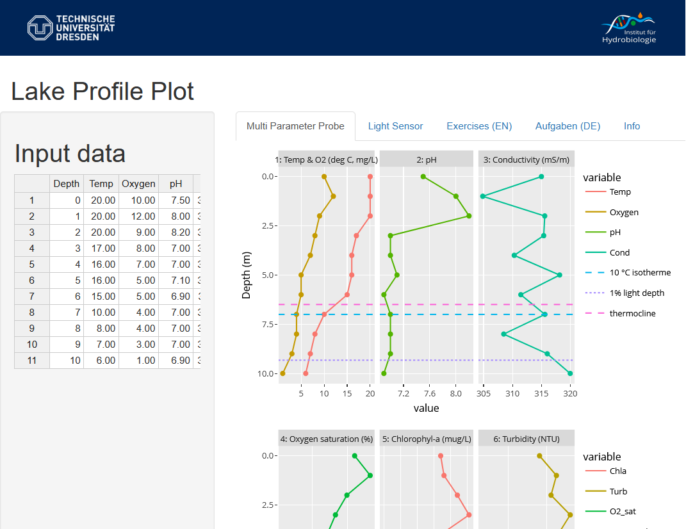
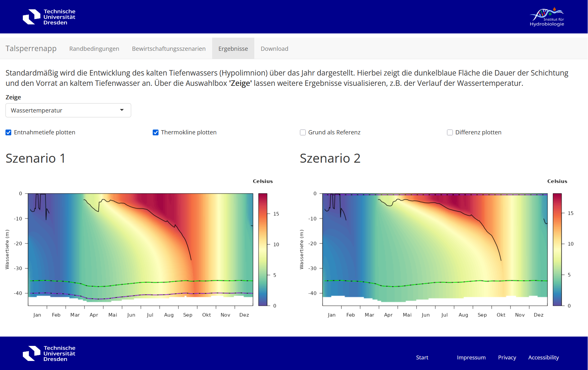
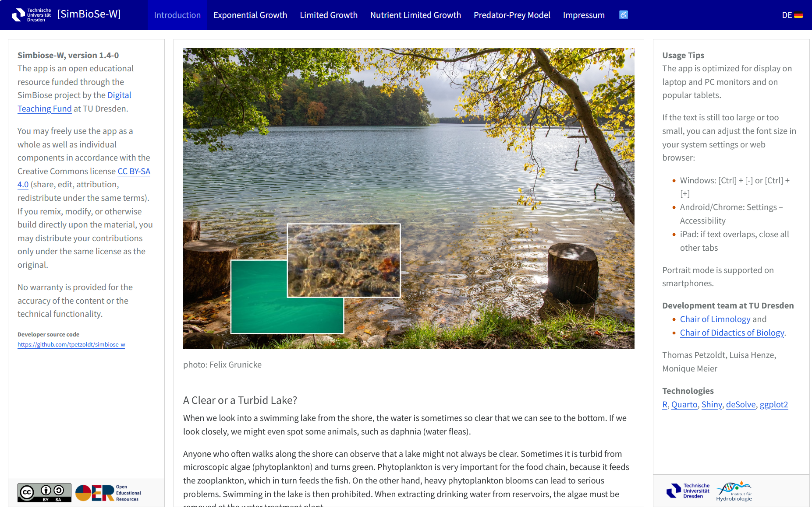
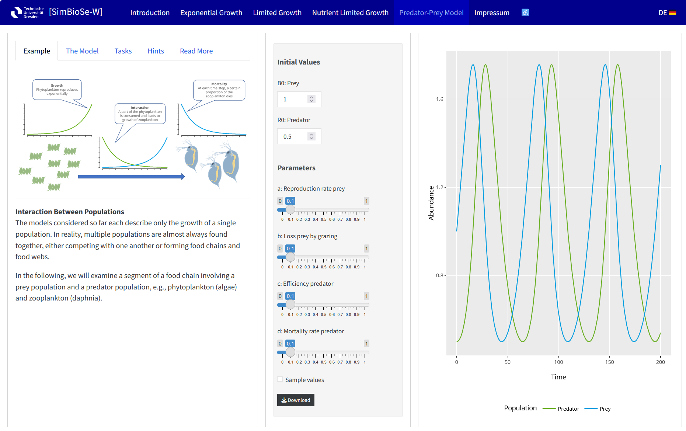
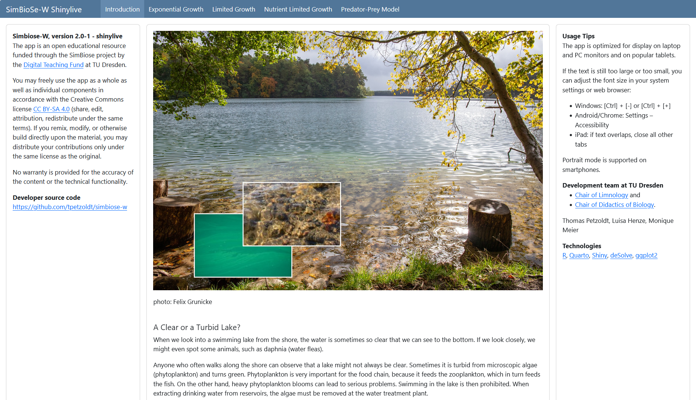

Playful Teaching of Simulation Models: From Monolithic Shiny Apps to Quarto Dashboards and webR
2026-07-09
Playful Teaching
of Simulation Models:
From Monolithic Shiny Apps to Quarto Dashboards and webR
Thomas Petzoldt and
Johannes Feldbauer

The Teaching Challenge
Increasing Complexity and Cross-Disciplinary Skills
\(\Rightarrow\) Modeling and data science became an important part of almost every field.
Demand in Research and Engineering
- people who can use computers
- people who can understand models
- people who are able to develop models
School Experience
- mathematics is complicated
- programming is something for nerds
- differential calculus is rocket science
Domain knowledge
- Aquatic ecology, in my case 😉
Use of Web-based Apps with Shiny
Applications
- Understanding of statistical concepts (e.g. autocorrelation)
- Exploration of dynamic systems (growth, predator-prey, chaos)
- Analysis of experimental data (e.g. from measurement probes)
- Complex ecological models, e.g. Cyanobacteria in lakes, Reservoir Management
Advantages
- Interactivity: Playful exploration of data and models
- Data: Direct access to test cases and real world data
- Algorithms: full R ecosystem available
→ No installation hurdles, no Excel debugging, no problems with csv2
Use Project Communication and Teaching
For example
- Students of Aquatic Ecology, Hydroscience and Engineering
- People, interested in the facts of climate warming
- Participants of an ecological conference
- Reservoir management professionals
- Students who want to become high-school teachers
- School kids … and their parents
Example 1: Lake Profile Plotter
- Analysis of multiparameter probe data
- Complex interactions between temperature, light, algae, oxygen, pH, conductivity
- Excel data structures, plotting, trend line, colors, … distract from content
- Concentrate on scientific background and data interpretation

\(\Rightarrow\) Has also passed its acid test in field courses.
Example 2: Climate Data Explorer
- Visualisation of climate data and trends
- Data retrieval from the German Weather Service
- Used in teaching and for public outreach
Example 3: Reservoir Management Model
Influence of Climate Warming on Water Availability from Drinking Water Reservoirs
- Hydrophysical model GOTM provided as web service
- Predefined scenarios
- Quick performance
- Results can be downloaded

Is everything perfect now?
No
“Classical” Shiny Apps
Technical Fragmentation: Zoo of Apps
- Server load, security, and OS updates
- Regular updates and maintenance required
- Each app has unique dependencies and design philosophy
Didactical: Media Fragmentation
- Small apps: Limited complexity, self-explanatory but shallow
- Complex apps:
- High development effort,
- Overwhelming for users, require external explanations (e.g., handouts)
- Storyboards: Linear, more focused on presentation than active learning
Approach
Step 1: Seamless Integration of Code and Docs
- App to vizualize essential growth processes
- by example of a food-web in a lake
- contains extensive textual information
- Target groups:
- students of aquatic ecology
- higschool biology teacher students
- highschool students (11th year)

Quarto Structure Example
- Outline with repeated elements
- Caption hierarchy defines dashboard structure
- Top Menu
- Tabs
- Modular and extensible
- Independent code and text files
- Independent testing and debugging
- Easy translation
- Adaptible for different audiences
# Exponential Growth
## Description
::: {.panel-tabset width="38%"}
### Example
{{< include exponential_example.qmd >}}
### The Model
{{< include exponential_description.qmd >}}
### Tasks
{{< include exponential_tasks.qmd >}}
### Hints
{{< include exponential_hints.qmd >}}
### Read More
{{< include exponential_more.qmd >}}
::: <!-- end tab set --->
<!-- contains code for 2 columns: widgets + graphics --->
{{< include ../code/exponential_code.qmd >}}
# Limited Growth
## Description
...
# Nutrient Limited Growth
...
# Predator-Prey Model
...Example: Predator-Prey Model
Unified UI
- Top-hierarchy as Quarto document
- Simple, consistent layout
- → Reduce user confusion
Integrated Design
- Narrative + interaction + graphics
- → Suitable for self-directed learning
Modular Structure
- Separate files allow easier updates
- Scalable and maintainable

Demo
Each section has a Description, organized as Panel Tabset:
- Example: Introductory text with a real-world scenario
- The Model: Explanation of underlying processes and equations
- Tasks: Exercises to explore model dynamics
- Hints: Guidance for solving tasks
- Read More: Links to additional resources or references
The Widgets and Graphics card integrates Shiny code to create interactive widgets and visualizations in a two-column layout.
Step 2: “Serverless” Deployment
Avoid Specialized Shiny Server
- Convert Shiny app with shinylive1 into standalone Web-R2-Apps
- Uses WebAssembly3 to run R and the app entirely in the browser
- Deployment: No R server or Shiny server is required
Advantages and Challenges of Web-R
Advantages
- Runs on any web server, including static ones
- No need for a dedicated Shiny server
Challenges
- Startup delay: All required packages must be loaded from the web
- Package availability: Some R packages, like deSolve, are not compatible with Web-R
Solution
- Simplify code and reduce dependencies
- Use base graphics instead of heavier packages like ggplot2
- Implement a standalone ODE45 solver in pure R to replace unavailable packages
Demo

Conclusions
Pros and Cons
| Property | Complex Shiny Apps | Quarto Dashboards with Shiny | Shinylive Apps |
|---|---|---|---|
| Full Power of R | Full access to R’s capabilities, including compiled code. | Full access to R’s capabilities, including compiled code. | Supports WASM-compatible R packages and user-level code. |
| Implementation | Full flexibility, supports backend code (e.g. compiled binaries) and database access. | Flexible and consistent layout; supports backends and database access. | Runs entirely in the browser, no backend or database access, startup delay. |
| Ease of Implementation | Requires significant expertise in Shiny, R, and web development, especially for maintenance. | Easy to implement and maintain; Quarto simplifies layout and integration. | Easy to implement, no server setup required, apps can be deployed as static files. |
| Server Infrastructure | Requires Shiny Server or Posit Connect for deployment. May need scaling of CPU and memory. | Requires Shiny Server or Posit Connect for deployment. May need scaling of CPU and memory | Scales effortlessly as apps run entirely in the browser. |
| Integration of Code and Tutorials | Allows complex applications, but may require external tutorials or handouts. | Integration of code, text, and interactivity in a single document; ideal for teaching. | No dependency on specific maintainer and server provider; excellent for didactic purposes. |
Summary
- Complex Shiny Apps
- For complex applications requiring backend integration, databases, etc.
- High flexibility but significant technical and implementation overhead.
- Didactic material often separate, less suitable for self-directed learning.
- Quarto Dashboards with Shiny
- Balance between complexity and ease of use.
- Suitable for moderately complex applications.
- Integrates text, visualization, and interactivity in a single document.
- Shinylive Apps
- Best for lightweight applications that run entirely in the browser.
- Ideal if number of users is large or unknown, no CPU scaling issues.
- Ensures longevity of tutorials, independent of external hosting and maintenance.
- Dashboards with Shinylive
- Combines the advantages of Quarto Dashboards and Shinylive.
- A highly appealing approach for teaching apps of medium complexity.
Acknowledgments
- Luisa Henze, Monique Meier, Thomas Berendonk
- Digital Learning and Teaching Fund of TU Dresden …
The R Community

Petzoldt & Feldbauer | useR!2026 | 2026-07-09